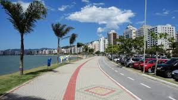
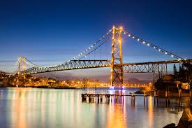

Passear na Avenida Beira Mar

A Avenida Jornalista Rubens de Arruda Ramos, mais conhecida como Avenida Beira-Mar Norte, é uma avenida de Florianópolis. Localiza-se na região central da cidade, entre a parte inferior da Ponte Hercílio Luz e o viaduto de acesso ao Norte da Ilha.
Trata-se de uma avenida que corre junto ao mar, construída sobre um aterro na década de 1960. Na década de 1980 foi ampliada e tomou seu formato atual, com três faixas de rolamento e mais três faixas de pista local no sentido Centro-Trindade, e integrou com o aterro da Baía Sul feito na década de 1970, além de receber calçadão e ciclovia. Twitter
Ponte Hercílio Luz

A ponte Hercílio Luz está localizada em Florianópolis, no estado brasileiro de Santa Catarina. A ponte foi construída com o objetivo de ligar a parte insular da capital do estado, na ilha de Santa Catarina, à sua parte continental, visando substituir o antigo serviço de ligação por balsas.Twitter
São José

O município de São José, localizado na Grande Florianópolis, é o quarto mais antigo de Santa Catarina e foi colonizado em 26 de outubro de 1750, por 182 casais açorianos, oriundos das Ilhas do Pico, Terceira, São Jorge, Faial, Graciosa e São Miguel. Em 1829, recebeu o primeiro núcleo de colonização alemã do Estado.Twitter